12/Feb
German Chocolate Cake
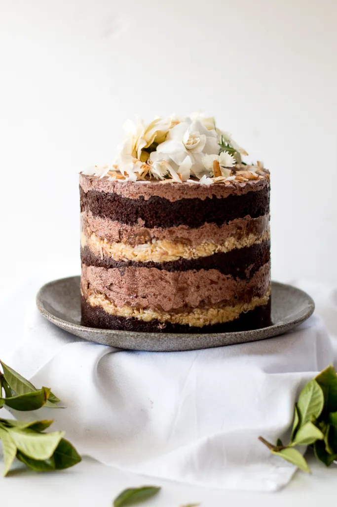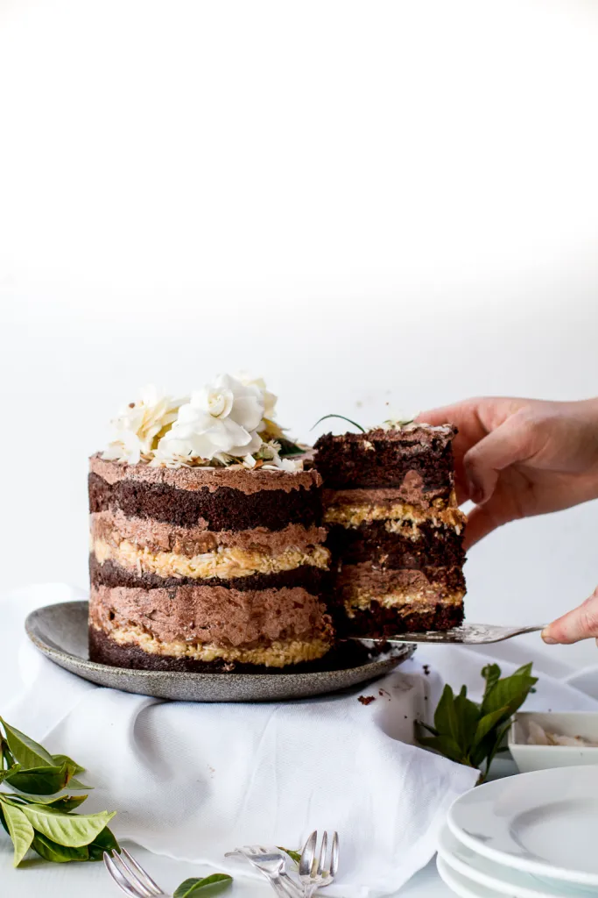
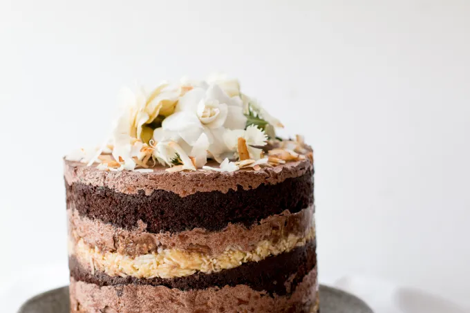
A version of momofuku's german chocolate cake with espresso & step-by-step photos. Layers of chocolate cake, crack pie, pecan butter & espresso frosting
A whole year - I can hardly believe it. 365 days, 87 posts, 35 cafe and restaurant reviews,
hundreds of hours spent trialing recipes, photographing posts, writing and editing. Crazy. And I have loved every minute.
The thing about university, and medicine in particular (at least for me), is that it can easily become all-consuming. It isn't like high school where
it isn't impossible to to get near-perfect grades and everything you need to know is spelled out carefully in classes where teachers actually know your name.
We are spoon-fed, in comparison. University has been like a runaway freight-train of information and work - lectures in a room of a few hundred students that contain
more information per hour than a whole day (or week!) of school, and exams that actually are practically impossible to ace. Studying all weekend, or even after dinner,
was a completely foreign concept to me, and it was difficult to wrap my head around the fact that I couldn't get 100%, I couldn't be the best - and anyway,
I didn't want to have to spend every single waking hour at my desk.
Accepting that I will do the best I can in the time available took my first year. Accepting that I wanted to visit cafes, and fit in exercise, and spend time reading,
with friends and have interests outside of medical school -and that would mean not getting those challenging 10 or 15 questions in exams that would take an extra 10 hours
a week of study to maybe get right. And life would be a million times more enjoyable for it.
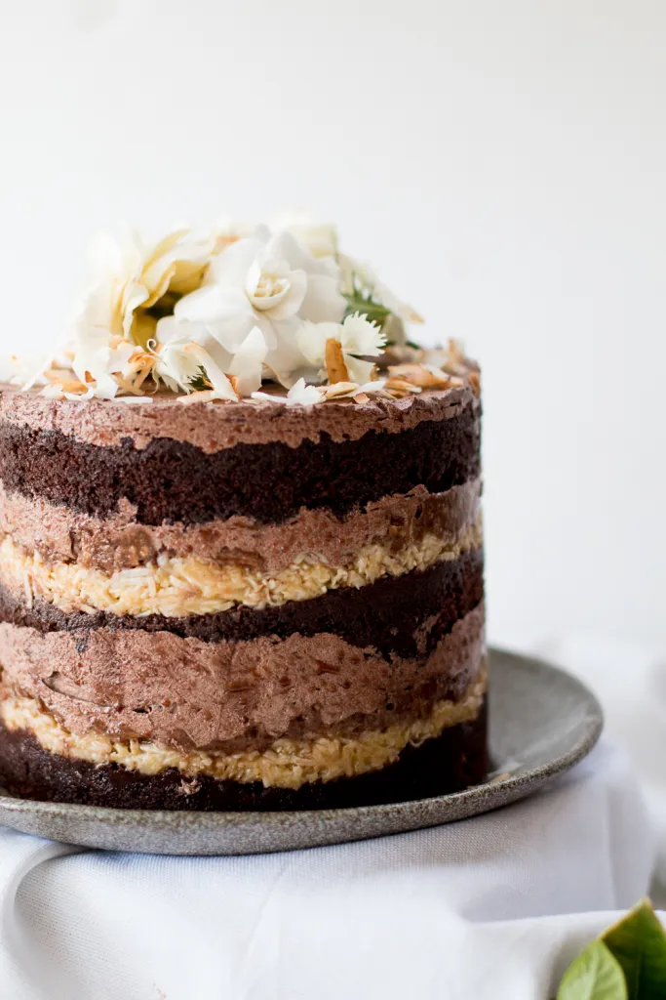
This little corner of the internet has been a big part of that in 2015. It has been an opportunity to put some energy into one of my other passions,
to switch my mind from science and learning anatomy into something less structured and more creative - even if just for an hour or two.
A record of thoughts, feelings, events and recipes that, scarily enough, I will be able to look back on in 20 (or even 80!) years time.
What has surprised me is how much I have grown to love photography: at the start, it was a means of conveying the beauty of a cake, or a tart - a way of convincing
readers and family members that it was a recipe worth attempting. It has now become a hobby in and of itself - now armed with various lenses and a tripod,
a family trip to Turkey (see here and here) was recorded and experimenting with different props and lighting is almost as much fun as the recipes themselves.
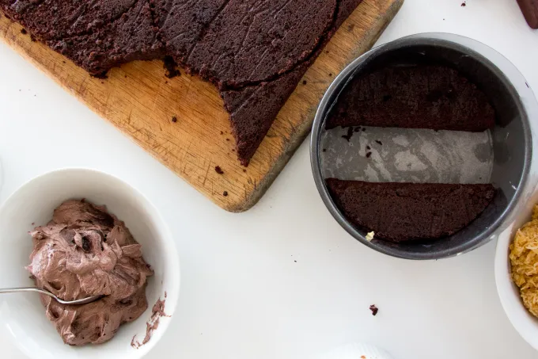
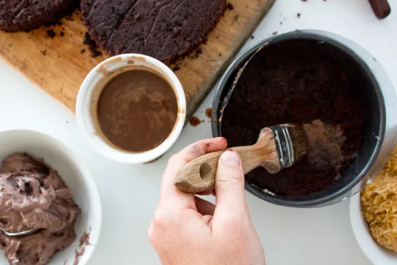
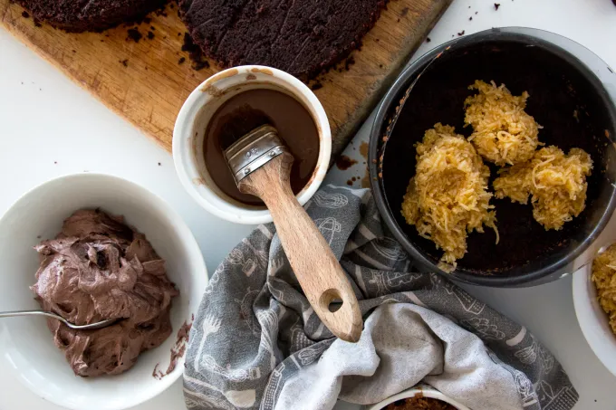
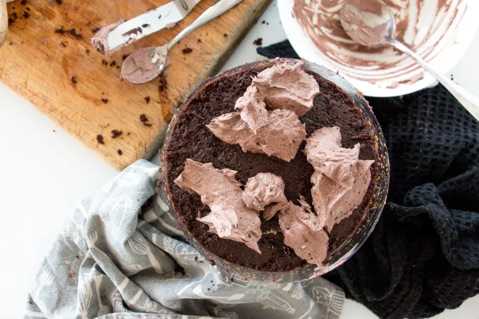
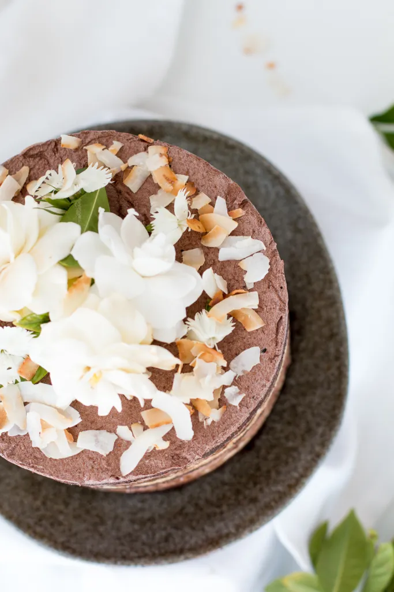
I have so much appreciation for everyone who visits this blog - those who comment and try recipes, or those just passing through,
are what make it seem like I am not just putting thoughts into some random black hole, a void on the internet. So a big thank you! And to celebrate,
here is one of my most decadent cakes yet. Adapted from the ever-inspiring, incredible momofuku milk bar, it is a version of their German Chocolate cake.
To celebrate the first year of loving coffee, I have added espresso to most components, with the slight bitterness balancing the rich sweetness of the rest of the cake.
Three layers of a dense, rich dark chocolate cake are brushed with a chocolate-espresso soak for extra moisture and flavour and layered with a coconut version of the famous momofuku crack pie – a buttery,
gooey caramelised mess of sugar mixed with threaded coconut into a thick filling layer. On top of this is a toasty, nutty homemade pecan & walnut butter with crumbled wafers giving texture,
and layers of thick, fluffy chocolate-espresso frosting. Heaven, I tell you. Even though it is a small cake (and you might look at the 15cm/6inch cake tin thinking it is way too small for your cake appetite),
the height and richness means you really only need a small slice, so it easily feeds 8 people, if not 10.
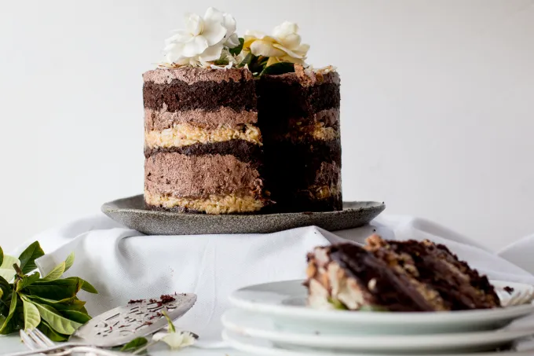
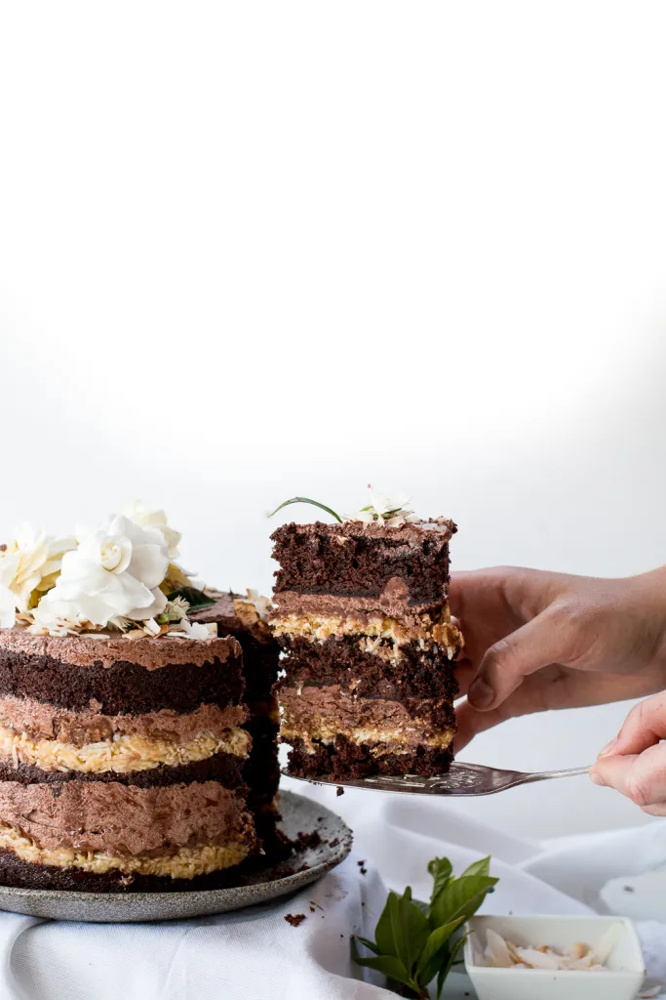
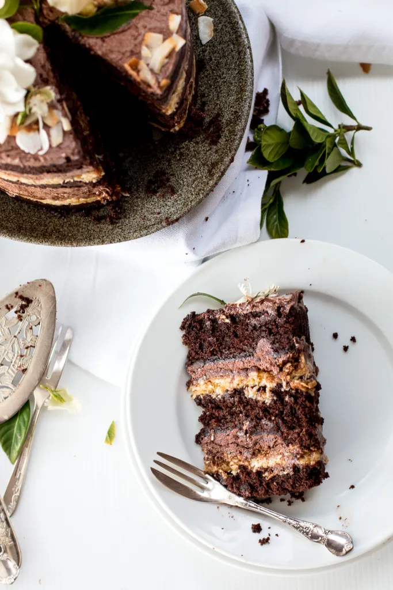
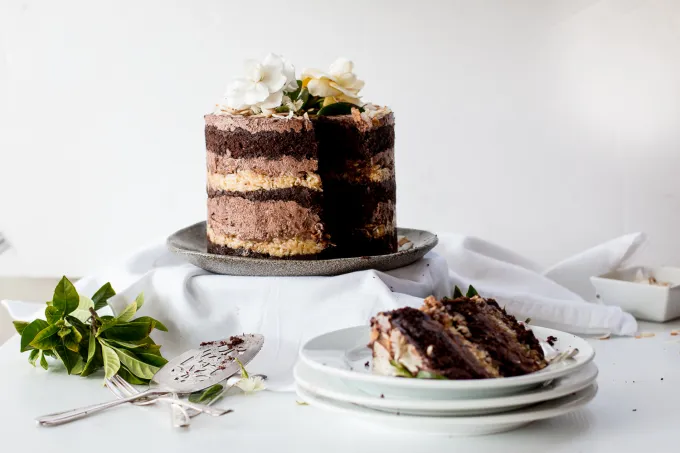